Engineering made real.
Really real.
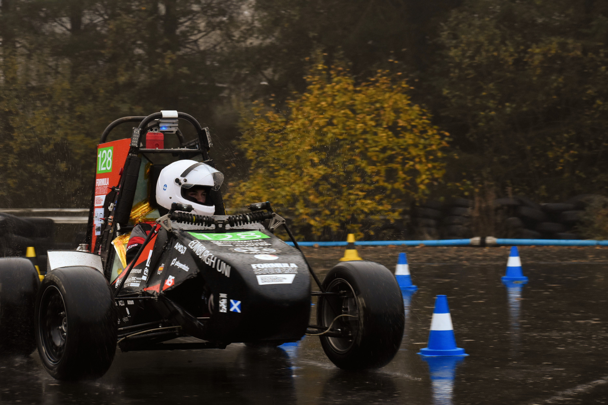
In October 2024, I joined Edinburgh University Formula Student as a vehicle dynamics engineer. Since then, my involvement has far surpassed my expectations. December 2024, I was tasked with modelling and designing the suspension, steering, and shock assemblies for our SISU 26E concept class car. At the Formula Student UK competition hosted at Silverstone Circuit, I was able to put my involvement to the test, participating in scrutineerings and design presentations. In September 2025, I was honoured to be chosen as the driver for the team, and participated in testing sessions at Knockhill Racing Circuit, thrashing our SISU 25D car on slicks in the wet.
LinkedIn post!
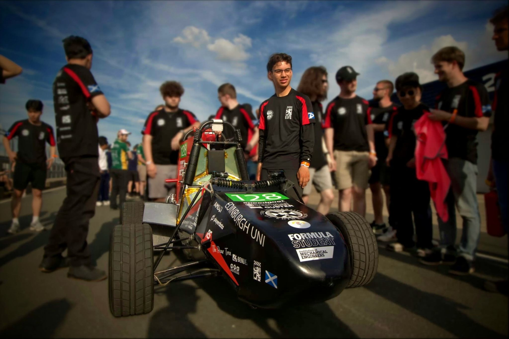
Suspension Geometry Simulator
The Suspension Geometry Simulator is a project developed to model and optimise the suspension geometry for the SISU 26E concept class car. Built in MATLAB, Simulink, and Simscape from scratch, the program sweeps through every possible suspension geometry and measures its performance. The data is then processed and the final suspension geometry is used as the basis of the car's suspension design in SolidWorks.
LinkedIn post!

Roll Simulation
Models camber, caster, and toe and the movement of roll centers during roll.
Used to identify optimal static camber through cornering properties.
Heave Simulation
Models camber, caster, and toe and the movement of roll centers during heave.
Used for spring rates, motion ratios, damping coefficients, Aerodynamics, and
stability calculations.


Pitch & Pitch Center Simulation
Models the effects of camber, caster, and toe when the car pitches
forward and backward.
Models the movement of pitch centers during dive, squat, and lift, and
provides justification for anti-dive and anti-lift geometry.

Steering and Anti-Ackermann Simulation
Models camber, caster, and toe during steering, and measures anti-ackermann.
The anti-ackermann is combined with our in-house tyre magic formula data to
optimise steering geometry and anti-ackermann.
WORK IN PROGRESS - MORE TO COME
Suspension Design for SISU26E

CAD
FEA
Topology Optimisation
WORK IN PROGRESS - MORE TO COME
Manufacturing

Hydraulics & Braking Systems
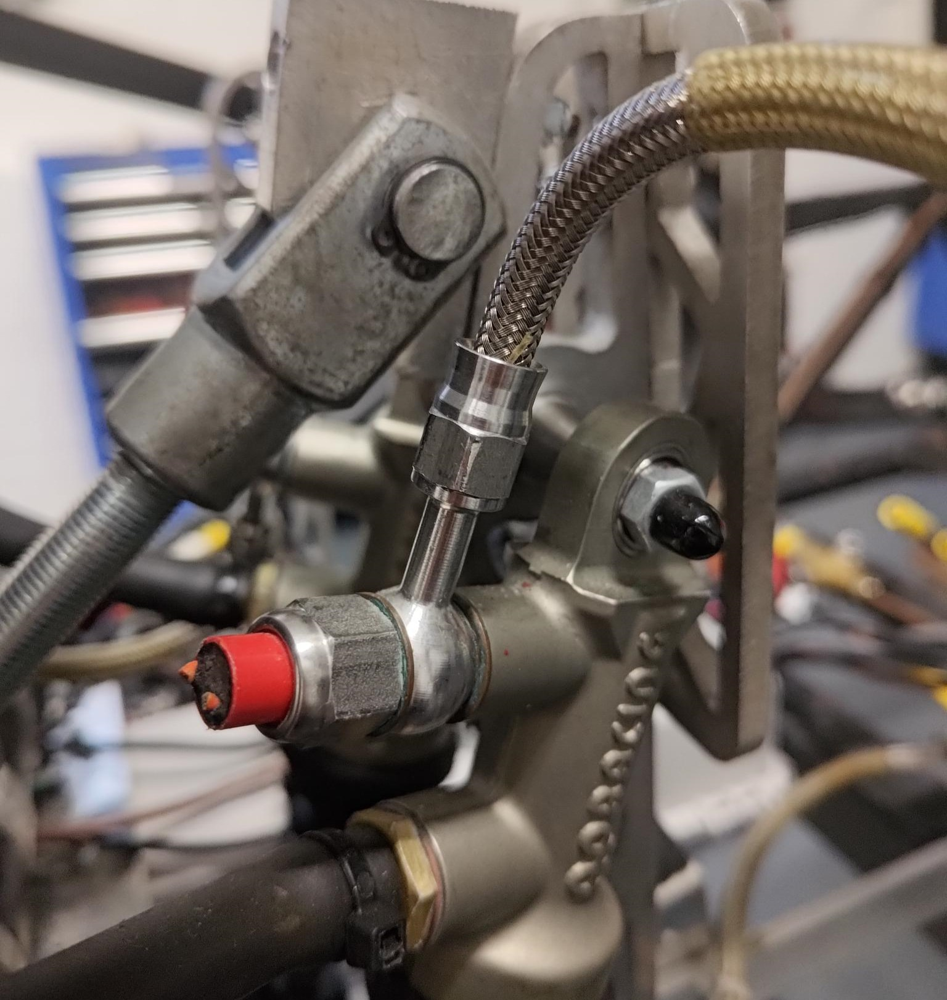
WORK IN PROGRESS - MORE TO COME
3D Printing
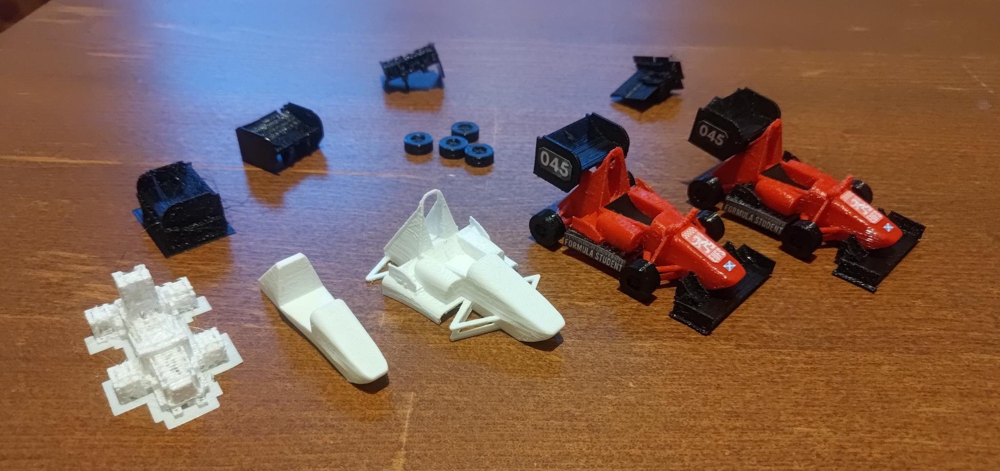
WORK IN PROGRESS - MORE TO COME
Laser Cutting
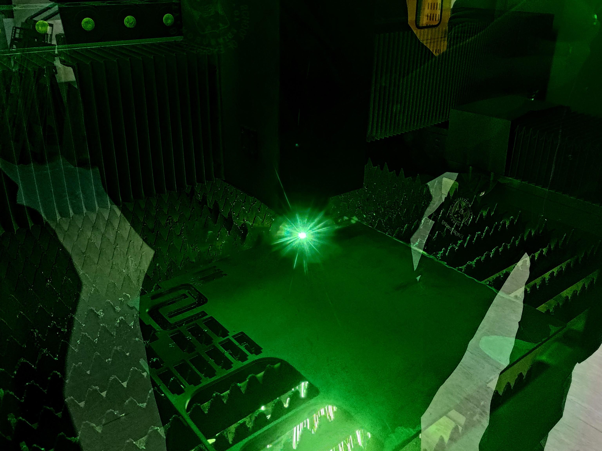
WORK IN PROGRESS - MORE TO COME
Point-Mass Laptime Simulator
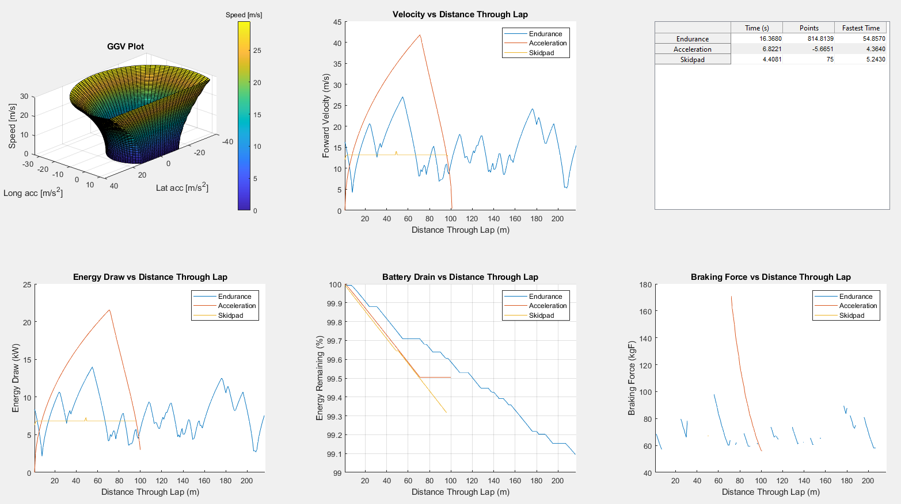
This is a project developed for the University of Edinburgh Formula Student in the Fall of 2024 by Paul Wang (Vehicle Dynamics). The goal was to be able to make quick, high-level decisions for the 2026 in-hub motor concept class car, such as car mass goals, power and engine decisions, and aero kit decisions.
Note: As of 3/12/2024, the FSUK Endurance Track has not been implemented, and the points equations are not accurate, see new 2025 rules.
LinkedIn post!
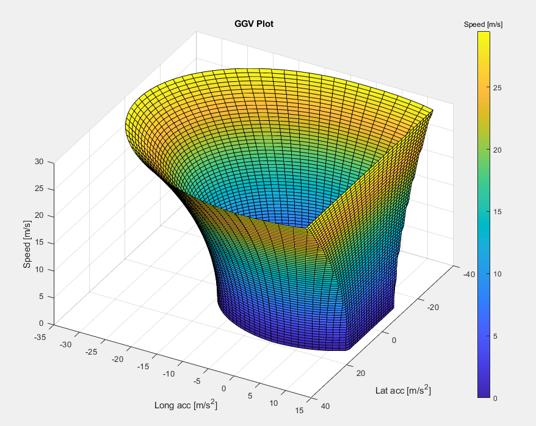
Description
- Uses Matlab to simulate a perfect laptime for any car at any track.
- By using specific car parameters, (mass, aerodynamic surfaces, drag, engine power, tyre grip) and track parameters (corner radius and distance between corners), the simulation calculates the perfect laptime with no variability. Each track and each car will provide the same laptime.
- Provides 6 outputs:
- GGV Plot (Maximum lateral and longitudinal acceleration for each velocity)
- Velocity (Forward velocity of the car throughout the lap)
- Event Score and Points (gives time and score for each FSUK event) (work in progress)
- Power Draw (Gives the power consumption throughout the lap)
- Battery Drain (Total battery percentage throughout the lap)
- Braking Force (Braking force throughout the lap)
- There are 5 assumptions used in the making of this laptime simulator:
- The size, wheelbase, trackwidth, and weight transfer of the car are not taken into account.
- The width of the track, racing lines, weather conditions, and track grip levels are ignored, or assumed to be accounted for in the initial track rendering when converting coordinate systems into a single array of meshed track radius segments. (See OpenTrack for guidance)
- The car is either turning or accelerating, not both, there are no combined lateral and longitudinal forces
- Time is not a factor in calculating laptime, as a quasi-steady state assumption is made. Although time is used in calculating energy draw and battery drain, these calculations are done after the laptime is calculated, and has no effect on laptime.
- Since the simulated lap is perfect, and many values are estimated or calculated with assumptions of their own, we expect the model to produce a performance overestimate.
Overview Notes
- The track is in 2-row array form, with the distance through the lap given in row 1, and the radius of the respective track segment given in row 2.
- The car parameters are given in the file named "Vehicle Profile for PM-LTS.xlsx". An incomplete vehicle profile may result in a compiler error. Check the code for which values are necessary for each sub-program.
- All sub-programs after Velocity vs Distance Through Lap (1.5 Laptime Velocity Calculations) have no effect on the laptime simulation, and are calculated after the velocity calculations, and require the velocity plot as an input.
GGV
"GGV" refers to the 3 axes, X, Y, and Z, which are in units Lateral Acceleration (usually expressed in unit Gs), Longitudinal Acceleration (usually expressed in unit Gs), and Velocity (V)
A GGV map is useful for calculating the maximum acceleration the car can produce, in every direction, for any velocity. It is useful to calculate these values beforehand, as it saves computing power by not re-computing the values for each iteration of the car's position, and has the added benefit of describing the characteristics of a car without needing its actual attributes.
Uses the following parameters:
- The mass of the car
- The specifications of the aero surfaces: Drag & downforce coefficients, and surface area.
- Tyre specifications: Longitudinal & lateral friction coefficients, and the rate of grip loss from additional normal forces
- Engine specifications: Maximum engine torque & diameter of the wheels
- Air density, drive factor and aero factor: Only used to amplify or test extreme cases, should not be modified regularly.
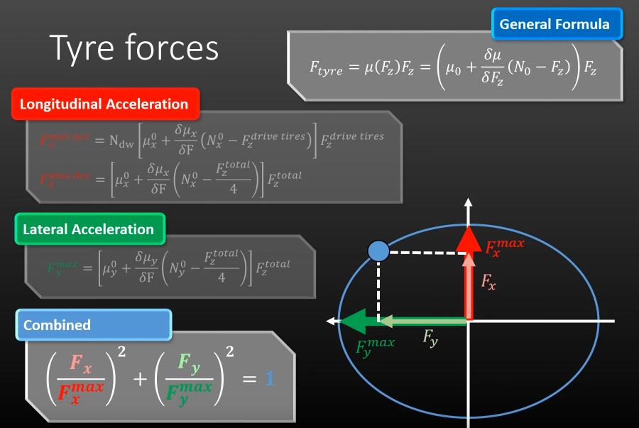
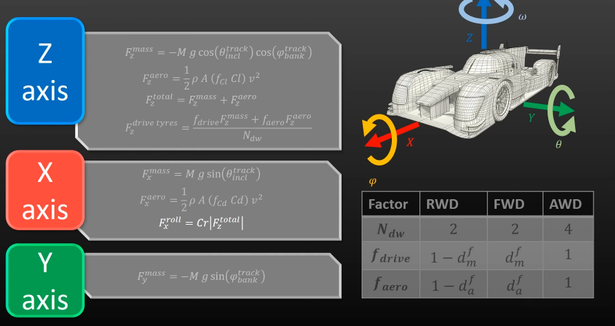
The "for" loop starts at velocity 1, calculates the maximum positive and negative lateral and longitudinal accelerations, then stores them in their respective arrays. The "for" loop then moves on to the next velocity, and calculates the maximum positive and negative lateral and longitudinal accelerations for that particular velocity. This acceleration should be different than the previous one when accounting for the fact that downforce (and therefore grip) increases with respect to velocity. Although this may seem counter intuitive, the brakes will act more powerfully at higher speeds due to the high downforce, and then become less powerful as the car becomes slower (such as how high-downforce cars need to trail brake in order to not lock up under braking). After the accelerations have been calculated, there will be 4 arrays for each of the 4 directions (left, right, forward, & backwards). The rest of the friction ellipse is then calculated using the equation of a standard ellipse. The combined lateral and forward acceleration data points, the sides of the ellipse, are not used for the laptime simulation, as one of the assumptions is that the car will not use combine lateral and longitudinal acceleration.
Velocity Through Lap
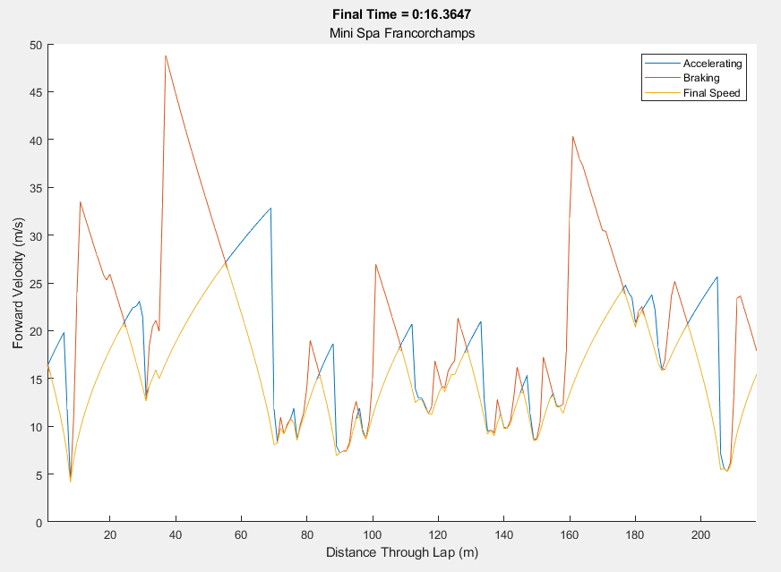
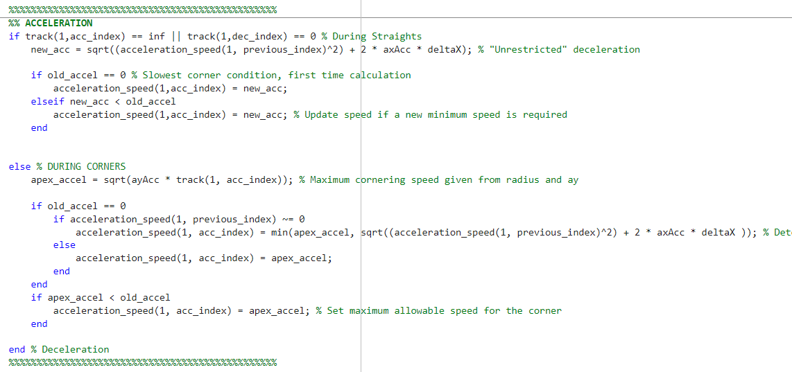
The velocity calculations consist of 2 nested for loops. The first loop iterates through a sorted array of every corner (defined as a 1m track segment with a non-infinity radius), with the tightest corner first. Starting at the slowest corner, the maximum cornering velocity is calculated using the radius of the corner and maximum lateral acceleration of the car (taken from the GGV map at the appropriate speed). From the corner, the car calculates the maximum forward velocity for the next 1m track segment, using the longitudinal acceleration calculated from the GGV. This process will continue around the entire track while ignoring corners, storing the velocity of the car at each 1m track segment in an array, until the iteration reaches the initial corner. Next, the program moves to the next tightest corner, and the process is repeated. If the calculation from this corner requires a lower speed than previously recorded in the array, the array value is overwritten with the new minimum speed for that 1m track segment. In addition, if the car reaches a corner where the maximum cornering velocity is higher than the car's current speed, the car will continue to accelerate through the corner until it reaches the maximum cornering speed. Once this process is completed for every corner on the track, you will have an array of track length, where each point corresponds to the maximum speed the car can accelerate at each point on the track. Then the process is repeated for the deceleration of the car, however the inner loop will simply loop going backwards on the track, calculating the maximum velocity for the previous track segment. At the end, the maximum speed array for the acceleration and the speed array for the deceleration are combined, taking the minimum of each value (see above graph)
Energy Draw Throughout Lap
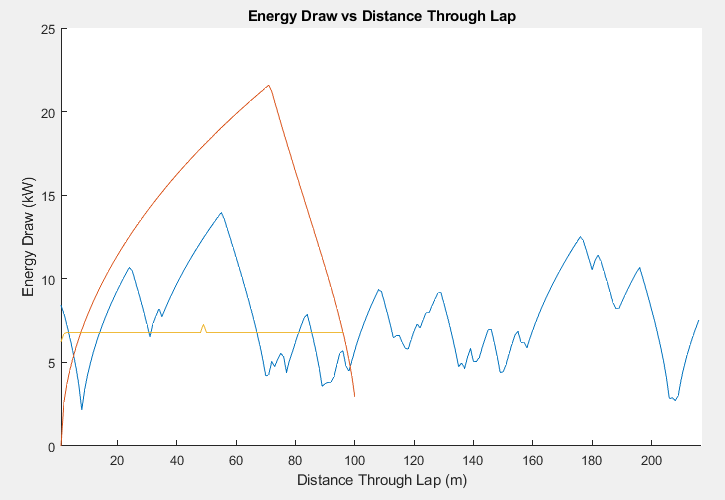
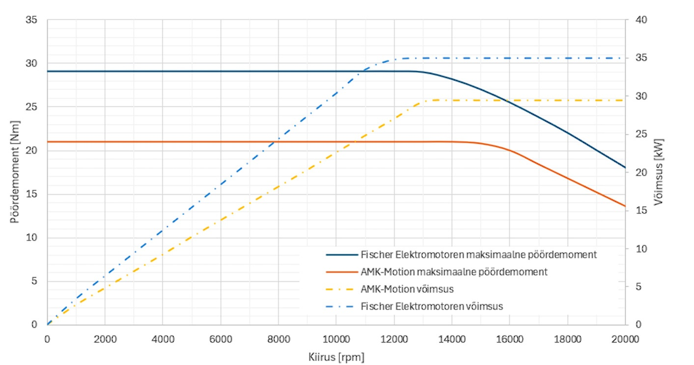
By taking in the laptime velocity calculation graphs, the RPM of the motor is calculated, using the diameter of the tyre and the gearbox ratio. Since the car is an EV with direct drive and a 1:13 simple ratio gearbox, the RPM of the car can be calculated by knowing the final velocity and going backwards. This process would not work for an internal combustion car or other car that has multiple gears. In addition, due to the nature of the EV, the power consumption per RPM is a simple linear relationship (shown in plot 2, "Voimsus" = "Power" & "Kiirus" = "Motor RPM"). Given the limit set by powertrain of 12,000 rpm, we can calculate the slope of the Power vs RPM graph, and given the RPM values throughout the lap previously calculated, we can calculate the power draw used by the motors throughout the lap.
Notes: The laptime simulation has not taken into account maximum RPM limit, but will continue to interpret values higher than 12,000 as falling within the linear relationship.
Battery Drain Throughout Lap
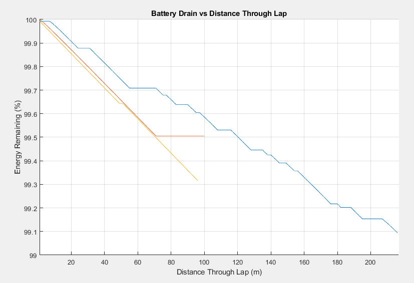
Using the power usage from the Energy Draw graph (1.7), and knowing the capacity of the battery, we can simply drain the battery of the appropriate energy levels throughout the lap by multiplying the power usage at each point multiplied by the time spent at each point.
Braking Force Throughout Lap
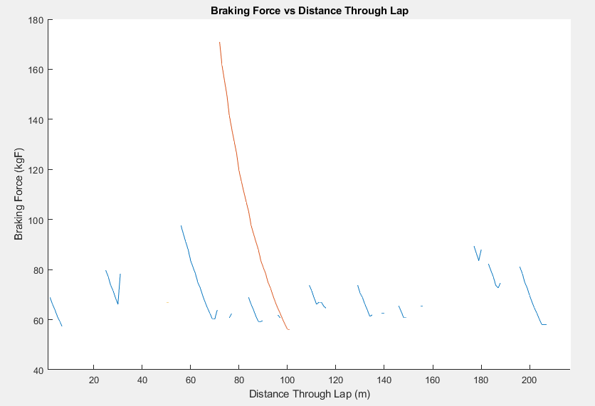
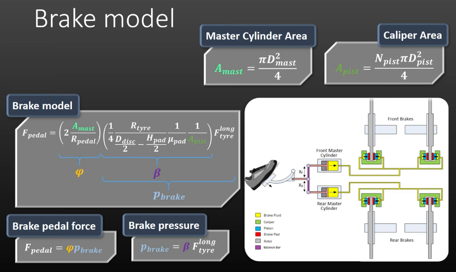
Starts from the vehicle velocity and then works backwards to calculate the force on the driver's foot. Uses the parameters taken from the Vehicle Profile file, calculates the maximum deceleration from the GGV, then calculates the forces on the car, then the brakes, then uses the hydraulic line parameters, and finally uses the length of the brake pedal to calculate the amount of force the driver needs to input to brake. Has no effect on laptime.
Testing & Driving
LinkedIn post!
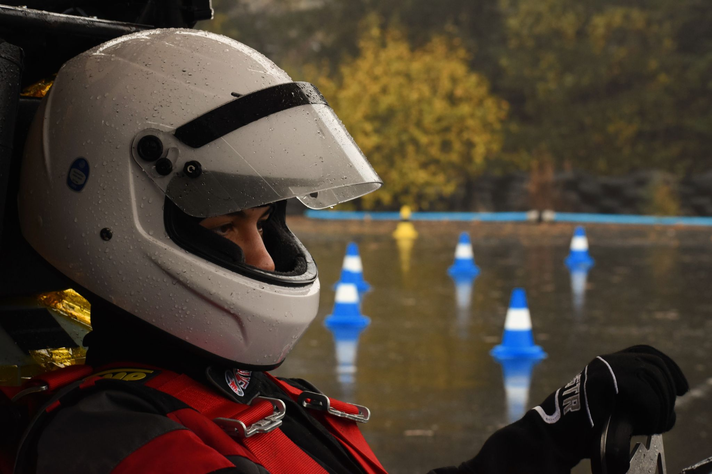
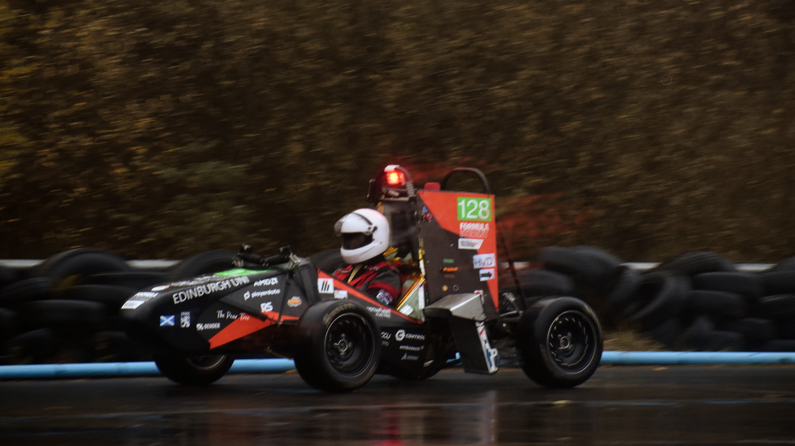
Testing session, Oct 26 2025, Knockhill Racing Circuit — Photo by Alya Ozturk
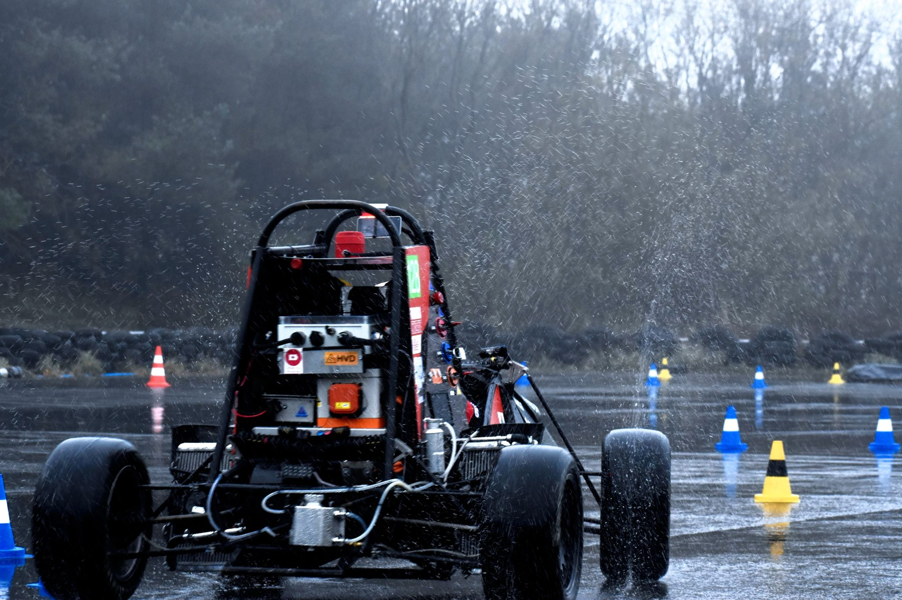
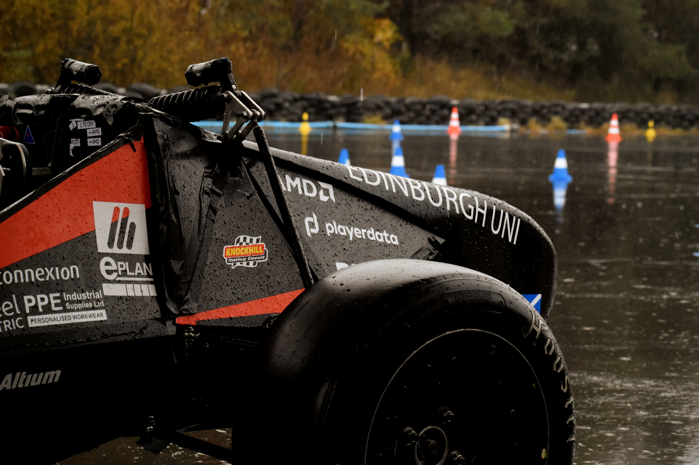
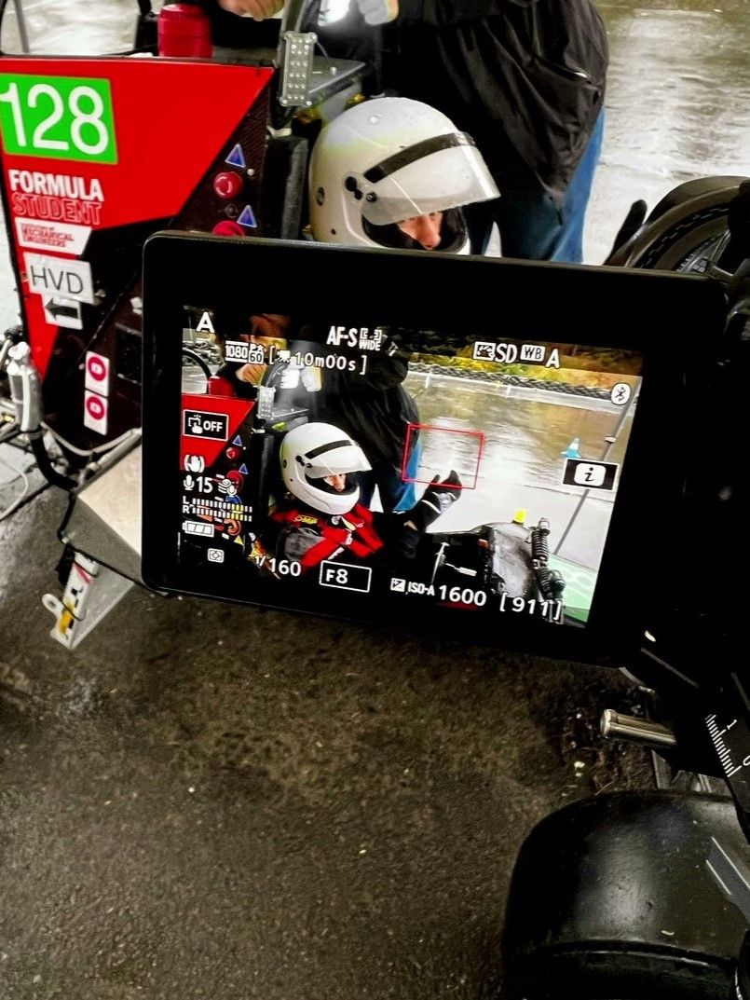
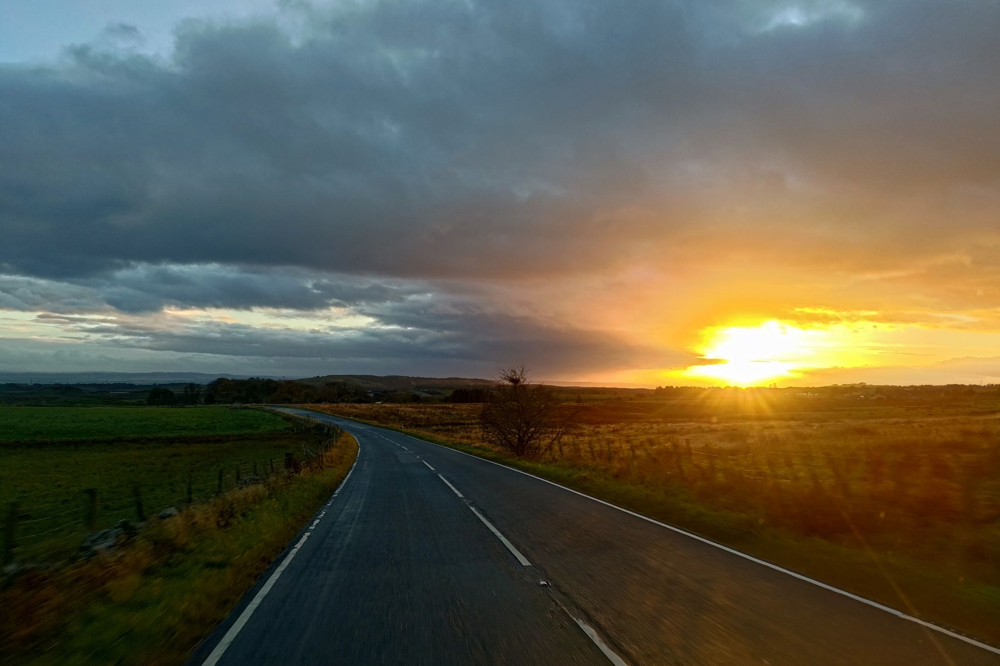
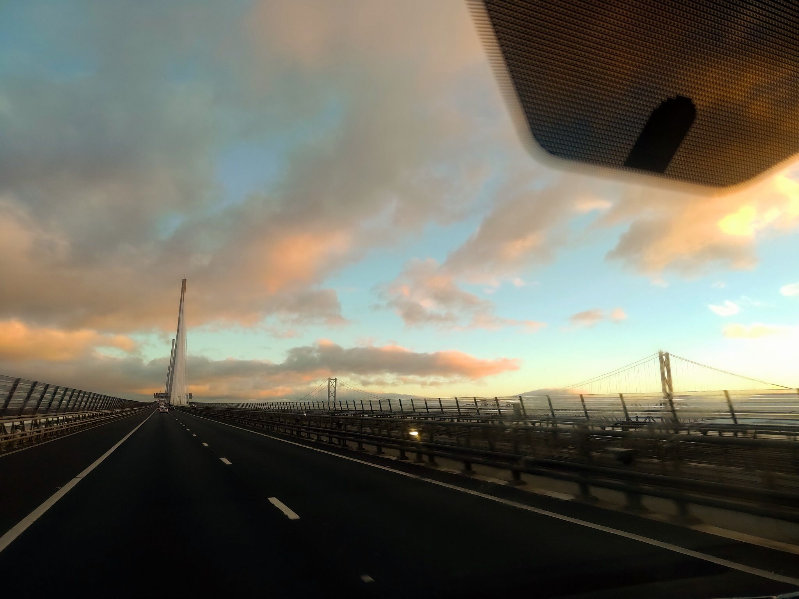
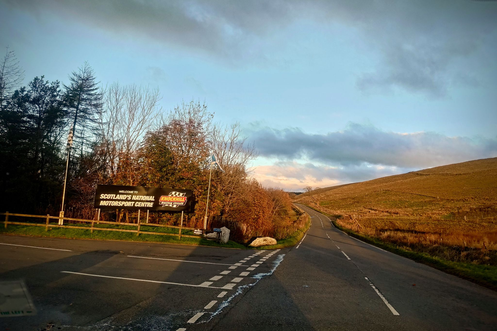
WORK IN PROGRESS - MORE TO COME